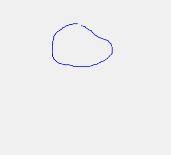
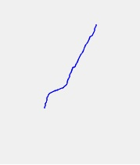
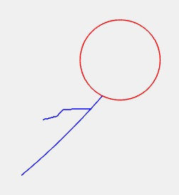
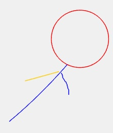

Segundo Proyecto Parcial
Stick Figures
Pantalla Inicial

Nombre del proyecto y los encargados de realizarlo.
Además contiene la información de los colores para cada parte del cuerpo de la figura. ______________________________________________________________________________________________________________________________________
Primer Trazo
Una vez que damos clic en "Empezar", se muestra un canvas que nos permite dibujar.Podemos empezar dibujando la cabeza o el tronco. La aplicación reconocerá cualquiera de las 2 figuras


En este ejemplo, se dibujó primero un trazo con forma un poco redonda. La aplicación lo tomó como Cabeza.


Ahora realizamos como primer trazo, una especie de línea. La aplicación la tomó como Tronco. ______________________________________________________________________________________________________________________________________
Extremidades
Para dibujar las extremidades, es el mismo procedimiento.Se puede empezar con cualquier brazo o pierda (izquierdo o derecho)


Cada extremidad tiene un color diferente, para identificar brazos y piernas, izquierdos o derechos.



Finalmente, hemos creado nuestra figura. Una vez creadas las 4 extremidades, la aplicación no reconocerá ningún otro trazo. ______________________________________________________________________________________________________________________________________
Limpiar Canvas
Se ha creado un botón, debajo del canvas, que permite limpiar todos los trazos realizadosSe puede empezar con cualquier brazo o pierda (izquierdo o derecho)